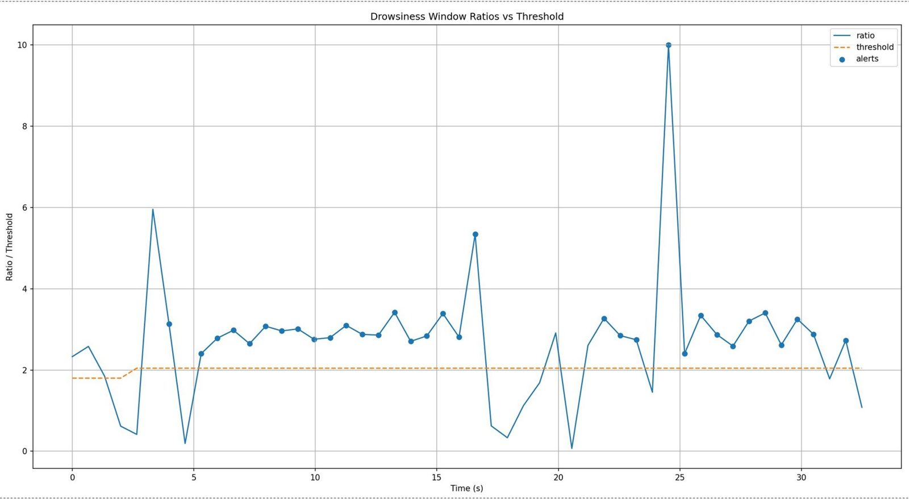
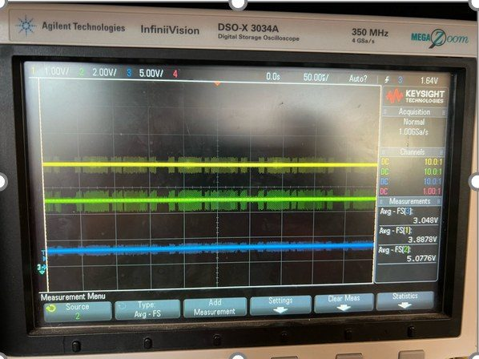
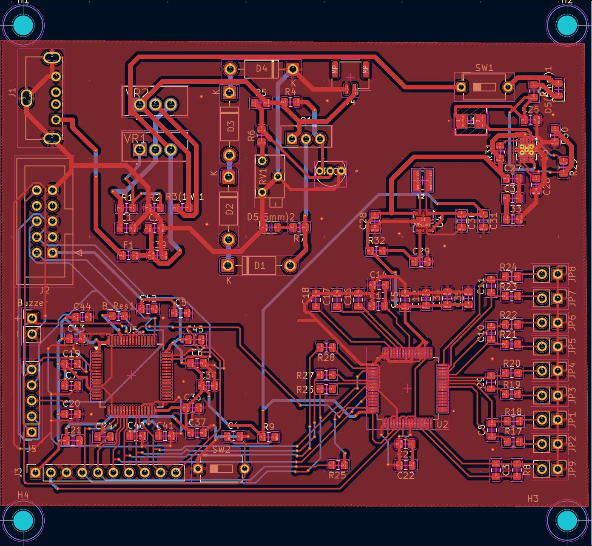
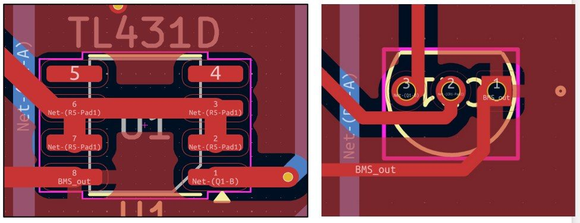
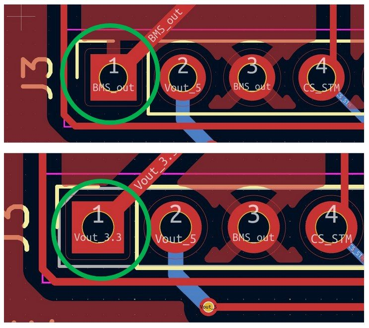
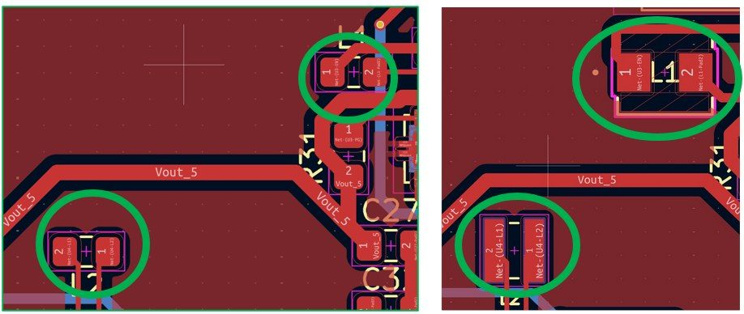

EEG Drowsiness Detection Headband
Drowsy driving causes tens of thousands of crashes a year. We built a headband that reads brain activity from the forehead, detects the shift towards early sleep, and sounds an alarm before a microsleep becomes an accident. Everything runs on the device, with no phone or laptop in the loop.
- When
- Sep – Dec 2025
- Course
- ECE 445 Senior Design, UIUC
- Team
- With Senturran Elangovan
- Recognition
- Hall of Fame, Honorable Mention

Four requirements
We started from four high-level requirements and designed every subsystem against them.
- Capture EEG in the 0.5–13 Hz band at 250 samples per second, clean enough to register drowsiness-related events.
- Detect drowsiness in real time on the device, with a low false-positive rate in user trials.
- Alert within 2 seconds of the onset of a drowsy window.
- Be safe and wearable for a full 8-hour shift on battery.
How it fits together
Four subsystems: power, analogue acquisition, an STM32 controller running the DSP, and a piezo buzzer. The STM32F412 has no Wi-Fi or Bluetooth. That was deliberate, because it keeps brain data on the device.
The ADS1299 connects over SPI, and its data-ready interrupt makes the firmware read each sample the moment it arrives. Its internal bias amplifier drives the inverted common-mode signal back into the body, which suppresses 60 Hz mains noise before it reaches the ADC.
Signal processing on a microcontroller
Every 128 samples (about half a second) the firmware processes a 256-sample window. It subtracts the DC offset and computes total power and RMS, then discards windows with very large RMS or very low power, which are usually motion artefacts or loose electrodes.
A full FFT would be overkill on a Cortex-M4, so band power at the theta (6 Hz) and alpha (10 Hz) frequencies comes from the Goertzel algorithm. Both bands rise during eye closure and early sleep.
The ε stops division by zero, and the floor guards against an unusually low baseline.
Making it work for different people
Our first version compared everyone against one fixed threshold. It worked well for the person we tuned it on. But resting brain activity varies a lot between people, so other users got constant false alarms or none at all. We weighed three fixes:
For the first 10 seconds of a session (2,500 samples) the wearer stays alert while the firmware averages their score into a personal baseline. The threshold is then set just above it.
To stop blinks and head movements setting off the alarm, a counter has to see three drowsy windows in a row before the buzzer fires, and a cooldown follows. With both in place, the alarm tracked drowsiness reliably across multiple users in our trials.

From first board to working device


To bring up the first board we probed each stage and traced faults back to the layout. The revision fixed three issues:



Measured performance
| Measure | Result | How we measured it |
|---|---|---|
| EEG sampling rate | 250 /s | Firmware logs over SWV. The only dips came from debugger jitter while logging. |
| Processing time per window | 3–8 ms | Timed on the STM32 for every window. |
| Alert response | < 2 s | From the onset of a drowsy window to the buzzer. |
| Power rails | 5.08 / 3.05 V | Oscilloscope, on battery. 5 V is within 1.6%; 3.3 V is 7.6% low but works fine. |
| Charge protection | 4.185 V max | The BMS held the cell below 4.2 V with an 8 V supply. |
| Battery life | ~7.5 h (est.) | Estimated from a 10-minute discharge (≈400 mA draw). Just short of 8 h because we used a 3000 mAh cell instead of the planned 3600 mAh to save cost and size. |
What I'd do differently
Our "drowsy" labels came from volunteers closing their eyes and slowing their breathing, not from clinical sleep staging. The subject pool was also small and all aged 20–25. More electrodes would open up beta and gamma bands. The electronics box was too big to balance comfortably on the cap, so the next version should be smaller.
- KiCad
- Mixed-signal PCB
- Hand assembly
- TI ADS1299
- STM32F412RGT6
- STM32CubeIDE
- C
- SPI + EXTI interrupts
- Goertzel DSP
- SWV / ITM logging
- Oscilloscope bring-up